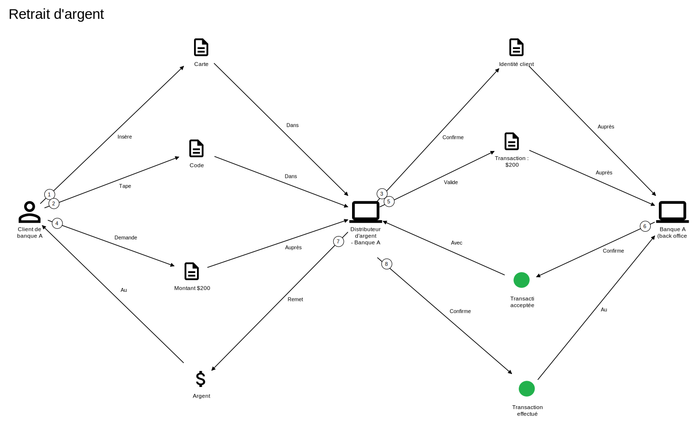

Domain Storytelling
Pour modéliser les interactions entre personnes et systèmes
Domain Storytelling : un processus est défini à travers des échanges :
- Information entre Personne et Personne
- Information entre Personne et Système
- Information entre Système et Système
Prenons l'exemple d'un retrait d'argent
Il s'agit donc de parcourir une histoire - comme pour Event Modeling - une seule histoire et que ce soit un exemple: qui sont les personnes? Soyez précis
Champs d'application
Dès qu'il y a des échanges
- Architecture d'entreprise: pour découvrir l'architecture qui sont des échanges entre personnes et systèmes. Mapper, Décvourer avec Domain Storytelling puis documenter formellement dans l'outil de l'AE (archimate, C4)
- Développement logiciel: c'est le but initial de l'outil, dans le cadre du Domaine Driven Design (DDD) donc la capture des besoins
- Phase amont: vous voulez comprendre comment les métiers travaillent, l'outil est parfait
Comment ça marche?
Attrapper une histoire avec un métier
- participants: En fonction du contexte, les personnes qui ont les conaissances métier et les personnes qui ont besoin d'acqurir ces connaissances
- Les premières minutes: demander d'expliquer au métier - une personne qui sera votre pilote - leur(s) domaine(s) métier, dans le but de partir sur un processus - 3 à 5 minutes
- Dès que vous avez identifié un processus avec eux: Vous commencez à dérouler ce processus à la volée grâce à l'outil egon.io ou stickers sur le mur - Les discussions sont entre vous et la personne métier
- Rejouer le processus: rejouer le processus pour vous assurez de votre compréhension
Les dangers?
2 types de disruption
- Les participants: demander d'expliquer au métier - une personne qui sera votre pilote - leur(s) domaine(s) métier, dans le but de partir sur un processus - 3 à 5 minutes
- Dès que vous avez identifié un processus avec eux: Vous commencez à dérouler ce processus à la volée grâce à l'outil egon.io ou stickers sur le mur - Les discussions sont entre vous et la personne métier
- Rejouer le processus: rejouer le processus pour vous assurez de votre compréhension